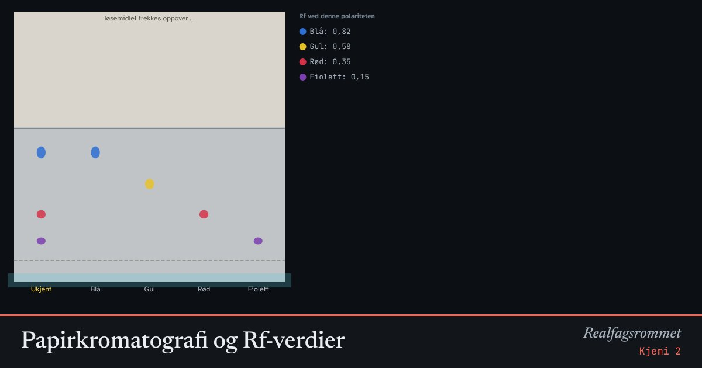

Papirkromatografi og Rf-verdier
Løsemidlet trekkes oppover papiret og tar med seg fargestoffene. Stoffer som binder seg lite til papiret, vandrer langt. Rf-verdien er en slags fingeravtrykk for stoffet.
Start animasjonen
Formler
Om animasjonen
Papiret er den stasjonære fasen og løsemidlet er den mobile fasen. Hvert stoff fordeler seg mellom dem på sin egen måte.
I første spor er en ukjent blanding. I de andre sporene er rene referansestoffer. Sammenlign høydene for å finne ut hva blandingen inneholder.
Rf-verdien avhenger av løsemidlet. Endre polariteten og se at stoffene skiller seg bedre eller dårligere.
Her er de polare fargestoffene tegnet slik at de følger et polart løsemiddel. Modellen er forenklet.
Prøv dette
- Hvilke fargestoffer finnes i den ukjente blandingen?
- Mål Rf for det gule stoffet. Er den lik i blandingen og i referansen?
- Finn en polaritet som skiller de fire stoffene godt fra hverandre.
- Hvorfor må startstreken tegnes med blyant og ikke med tusj?
Kompetansemål
- Kjemi 2: Kromatografi